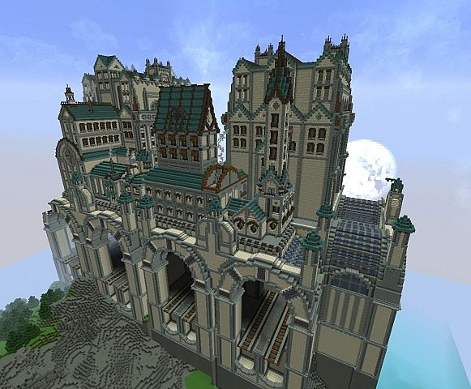
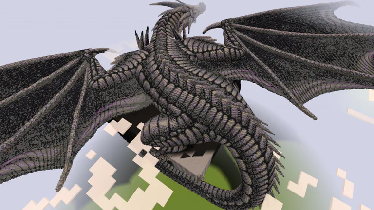
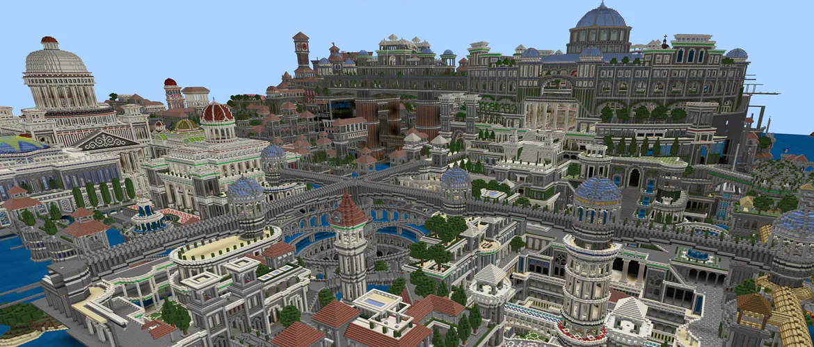

| Soundfile Names | Text Description | Embedded mp3 file |
|---|---|---|
| Bamboo breaking | Domino effect of breaking one bamboo that makes the others break. | |
| Experience orbs | Continuous collection of experience orbs. | |
| Challenge complete | The sound of completing one of the more advanced achievements. | |
| Image Names | Text Description | Embedded Image File |
| Steampunk travelstation | Massive build of a travelstation from a steampunk environment. |  |
| Dragon | A build of what the Ender Dragon (final boss in minecraft) could look like in higher quality. |
 |
| Complete City | Gigantic build of a city including tons of buildings. |  |
| Video Names | Text Description | Embedded Video file |
| 8-bit computer | Functional 8-bit computer built inside the game using simple logic gates. | |
| Speedrun | Previous world record speedrun of someone completing the game. | |
| Game trailer | The official trailer for the game Minecraft, from 2011. |
Since I am a big fan of the game Minecraft, I thought I'd feature some of the things I like about the game.
These vary from huge builds and contraptions that I admire to the smaller things like satisfying sounds.